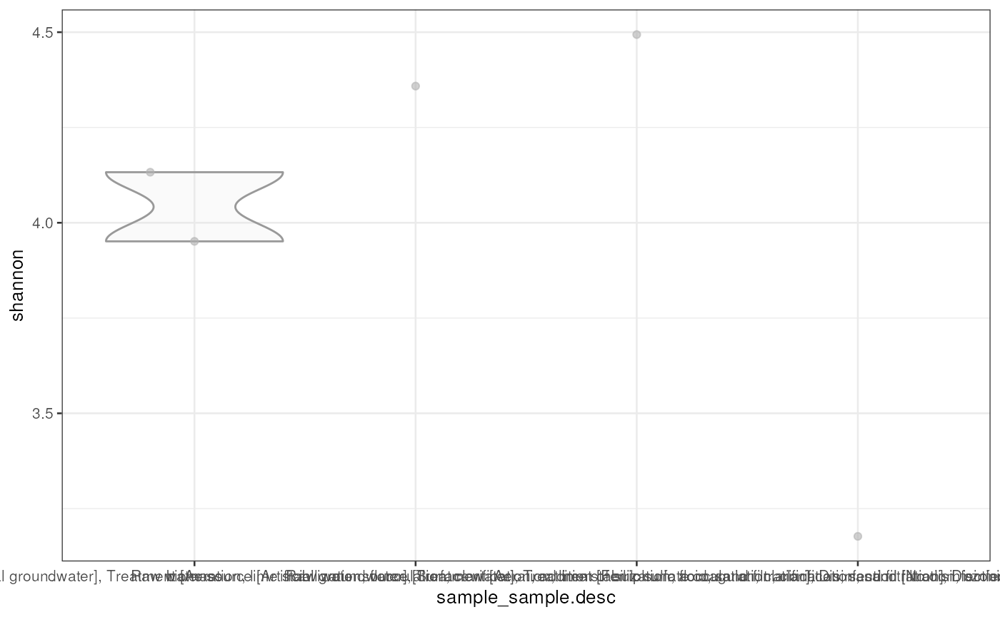
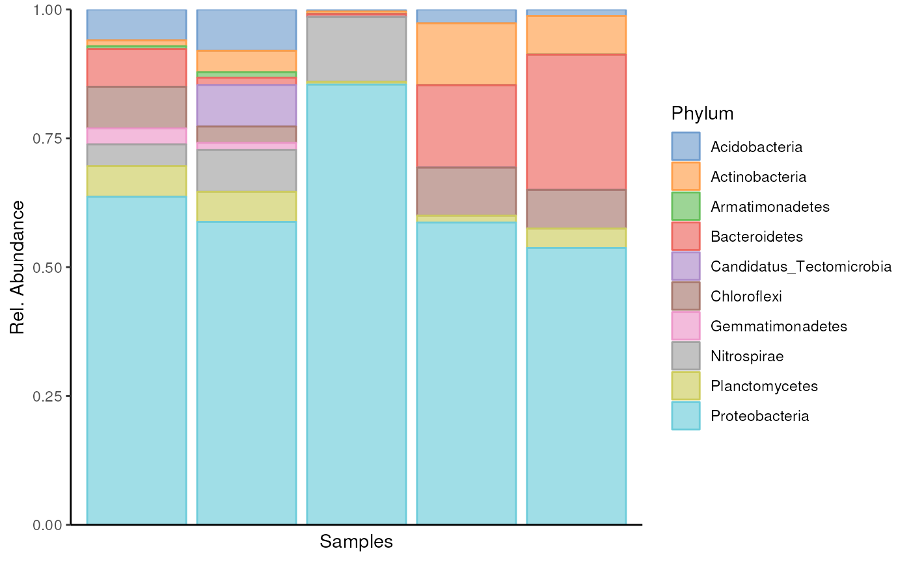
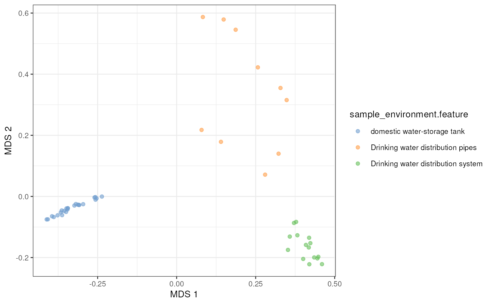

MGnifyR is a package designed to ease access to the
EBI’s MGnify resource,
allowing searching and retrieval of multiple datasets for downstream
analysis.
The latest version of MGnifyR seamlessly integrates with the miaverse framework providing access to cutting-edge tools in microbiome down-stream analytics.
MGnifyR is currently hosted on GitHub, and can be
installed using via devtools. MGnifyR should
be built using the following snippet.
BiocManager::install(MGnifyR)MGnifyR package
Once installed, MGnifyR is made available in the usual
way.
## Loading required package: mia## Loading required package: SummarizedExperiment## Loading required package: MatrixGenerics## Loading required package: matrixStats##
## Attaching package: 'MatrixGenerics'## The following objects are masked from 'package:matrixStats':
##
## colAlls, colAnyNAs, colAnys, colAvgsPerRowSet, colCollapse,
## colCounts, colCummaxs, colCummins, colCumprods, colCumsums,
## colDiffs, colIQRDiffs, colIQRs, colLogSumExps, colMadDiffs,
## colMads, colMaxs, colMeans2, colMedians, colMins, colOrderStats,
## colProds, colQuantiles, colRanges, colRanks, colSdDiffs, colSds,
## colSums2, colTabulates, colVarDiffs, colVars, colWeightedMads,
## colWeightedMeans, colWeightedMedians, colWeightedSds,
## colWeightedVars, rowAlls, rowAnyNAs, rowAnys, rowAvgsPerColSet,
## rowCollapse, rowCounts, rowCummaxs, rowCummins, rowCumprods,
## rowCumsums, rowDiffs, rowIQRDiffs, rowIQRs, rowLogSumExps,
## rowMadDiffs, rowMads, rowMaxs, rowMeans2, rowMedians, rowMins,
## rowOrderStats, rowProds, rowQuantiles, rowRanges, rowRanks,
## rowSdDiffs, rowSds, rowSums2, rowTabulates, rowVarDiffs, rowVars,
## rowWeightedMads, rowWeightedMeans, rowWeightedMedians,
## rowWeightedSds, rowWeightedVars## Loading required package: GenomicRanges## Loading required package: stats4## Loading required package: BiocGenerics##
## Attaching package: 'BiocGenerics'## The following objects are masked from 'package:stats':
##
## IQR, mad, sd, var, xtabs## The following objects are masked from 'package:base':
##
## anyDuplicated, aperm, append, as.data.frame, basename, cbind,
## colnames, dirname, do.call, duplicated, eval, evalq, Filter, Find,
## get, grep, grepl, intersect, is.unsorted, lapply, Map, mapply,
## match, mget, order, paste, pmax, pmax.int, pmin, pmin.int,
## Position, rank, rbind, Reduce, rownames, sapply, setdiff, sort,
## table, tapply, union, unique, unsplit, which.max, which.min## Loading required package: S4Vectors##
## Attaching package: 'S4Vectors'## The following object is masked from 'package:utils':
##
## findMatches## The following objects are masked from 'package:base':
##
## expand.grid, I, unname## Loading required package: IRanges## Loading required package: GenomeInfoDb## Loading required package: Biobase## Welcome to Bioconductor
##
## Vignettes contain introductory material; view with
## 'browseVignettes()'. To cite Bioconductor, see
## 'citation("Biobase")', and for packages 'citation("pkgname")'.##
## Attaching package: 'Biobase'## The following object is masked from 'package:MatrixGenerics':
##
## rowMedians## The following objects are masked from 'package:matrixStats':
##
## anyMissing, rowMedians## Loading required package: SingleCellExperiment## Loading required package: TreeSummarizedExperiment## Loading required package: Biostrings## Loading required package: XVector##
## Attaching package: 'Biostrings'## The following object is masked from 'package:base':
##
## strsplit## Loading required package: MultiAssayExperiment## Loading required package: biomformat##
## Attaching package: 'MGnifyR'## The following objects are masked from 'package:base':
##
## url, warningsAll functions in MGnifyR make use of a
MgnifyClient object to keep track of the JSONAPI url, disk
cache location and user access tokens. Thus the first thing to do when
starting any analysis is to instantiate this object. The following
snippet creates this.
mg <- MgnifyClient(useache = TRUE, cacheDir = "~/.MGnify_cache")Below, we fetch information on samples of drinking water.
# Fetch studies
samples <- doQuery(
mg,
type = "samples",
biome_name = "root:Environmental:Aquatic:Freshwater:Drinking water",
max.hits = 10)Now we want to find analysis accessions. Each sample might have multiple analyses. Each analysis ID corresponds to a single run of a particular pipeline on a single sample in a single study.
analyses_accessions <- searchAnalysis(mg, "samples", samples$accession)## Fetching analyses...##
|
| | 0%
|
|= | 2%
|
|=== | 4%
|
|==== | 6%
|
|====== | 8%
|
|======= | 10%
|
|======== | 12%
|
|========== | 14%
|
|=========== | 16%
|
|============= | 18%
|
|============== | 20%
|
|=============== | 22%
|
|================= | 24%
|
|================== | 26%
|
|==================== | 28%
|
|===================== | 30%
|
|====================== | 32%
|
|======================== | 34%
|
|========================= | 36%
|
|=========================== | 38%
|
|============================ | 40%
|
|============================= | 42%
|
|=============================== | 44%
|
|================================ | 46%
|
|================================== | 48%
|
|=================================== | 50%
|
|==================================== | 52%
|
|====================================== | 54%
|
|======================================= | 56%
|
|========================================= | 58%
|
|========================================== | 60%
|
|=========================================== | 62%
|
|============================================= | 64%
|
|============================================== | 66%
|
|================================================ | 68%
|
|================================================= | 70%
|
|================================================== | 72%
|
|==================================================== | 74%
|
|===================================================== | 76%
|
|======================================================= | 78%
|
|======================================================== | 80%
|
|========================================================= | 82%
|
|=========================================================== | 84%
|
|============================================================ | 86%
|
|============================================================== | 88%
|
|=============================================================== | 90%
|
|================================================================ | 92%
|
|================================================================== | 94%
|
|=================================================================== | 96%
|
|===================================================================== | 98%
|
|======================================================================| 100%
head(analyses_accessions)## [1] "MGYA00575724" "MGYA00575725" "MGYA00575727" "MGYA00575715" "MGYA00575722"
## [6] "MGYA00575720"We can now check the metadata to get hint of what kind of data we have.
analyses_metadata <- getMetadata(mg, analyses_accessions)## Fetching metadata...##
|
| | 0%
|
|= | 2%
|
|=== | 4%
|
|==== | 6%
|
|====== | 8%
|
|======= | 10%
|
|======== | 12%
|
|========== | 14%
|
|=========== | 16%
|
|============= | 18%
|
|============== | 20%
|
|=============== | 22%
|
|================= | 24%
|
|================== | 26%
|
|==================== | 28%
|
|===================== | 30%
|
|====================== | 32%
|
|======================== | 34%
|
|========================= | 36%
|
|=========================== | 38%
|
|============================ | 40%
|
|============================= | 42%
|
|=============================== | 44%
|
|================================ | 46%
|
|================================== | 48%
|
|=================================== | 50%
|
|==================================== | 52%
|
|====================================== | 54%
|
|======================================= | 56%
|
|========================================= | 58%
|
|========================================== | 60%
|
|=========================================== | 62%
|
|============================================= | 64%
|
|============================================== | 66%
|
|================================================ | 68%
|
|================================================= | 70%
|
|================================================== | 72%
|
|==================================================== | 74%
|
|===================================================== | 76%
|
|======================================================= | 78%
|
|======================================================== | 80%
|
|========================================================= | 82%
|
|=========================================================== | 84%
|
|============================================================ | 86%
|
|============================================================== | 88%
|
|=============================================================== | 90%
|
|================================================================ | 92%
|
|================================================================== | 94%
|
|=================================================================== | 96%
|
|===================================================================== | 98%
|
|======================================================================| 100%
head(analyses_metadata)## analysis_analysis-status analysis_pipeline-version
## MGYA00575724 completed 5.0
## MGYA00575725 completed 5.0
## MGYA00575727 completed 5.0
## MGYA00575715 completed 5.0
## MGYA00575722 completed 5.0
## MGYA00575720 completed 5.0
## analysis_accession analysis_experiment-type analysis_is-private
## MGYA00575724 MGYA00575724 metagenomic FALSE
## MGYA00575725 MGYA00575725 metagenomic FALSE
## MGYA00575727 MGYA00575727 metagenomic FALSE
## MGYA00575715 MGYA00575715 metagenomic FALSE
## MGYA00575722 MGYA00575722 metatranscriptomic FALSE
## MGYA00575720 MGYA00575720 metagenomic FALSE
## analysis_complete-time analysis_instrument-platform
## MGYA00575724 2020-11-10T18:30:29 ILLUMINA
## MGYA00575725 2020-11-10T18:32:51 ILLUMINA
## MGYA00575727 2020-11-10T18:38:27 ILLUMINA
## MGYA00575715 2020-11-10T17:57:30 ILLUMINA
## MGYA00575722 2020-11-10T18:19:20 ILLUMINA
## MGYA00575720 2020-11-10T18:13:57 ILLUMINA
## analysis_instrument-model analysis_Submitted nucleotide sequences
## MGYA00575724 Illumina HiSeq 4000 19391040
## MGYA00575725 Illumina HiSeq 4000 13081790
## MGYA00575727 Illumina HiSeq 4000 15271382
## MGYA00575715 Illumina HiSeq 4000 34688870
## MGYA00575722 Illumina HiSeq 4000 3987829
## MGYA00575720 Illumina HiSeq 4000 15536089
## analysis_Nucleotide sequences after format-specific filtering
## MGYA00575724 3004272
## MGYA00575725 1430476
## MGYA00575727 1887308
## MGYA00575715 2395935
## MGYA00575722 571525
## MGYA00575720 2069502
## analysis_Nucleotide sequences after length filtering
## MGYA00575724 3004272
## MGYA00575725 1430476
## MGYA00575727 1887308
## MGYA00575715 2395935
## MGYA00575722 571525
## MGYA00575720 2069502
## analysis_Nucleotide sequences after undetermined bases filtering
## MGYA00575724 3004272
## MGYA00575725 1430476
## MGYA00575727 1887308
## MGYA00575715 2395935
## MGYA00575722 571525
## MGYA00575720 2069502
## analysis_Reads with predicted CDS
## MGYA00575724 2937209
## MGYA00575725 1315125
## MGYA00575727 1844775
## MGYA00575715 2342337
## MGYA00575722 70416
## MGYA00575720 1925881
## analysis_Reads with predicted RNA
## MGYA00575724 6051
## MGYA00575725 4104
## MGYA00575727 5466
## MGYA00575715 5788
## MGYA00575722 492865
## MGYA00575720 5010
## analysis_Reads with InterProScan match analysis_Predicted CDS
## MGYA00575724 1245195 3041953
## MGYA00575725 523429 1364476
## MGYA00575727 736241 1915057
## MGYA00575715 1217927 2428753
## MGYA00575722 21828 71591
## MGYA00575720 837311 2002834
## analysis_Predicted CDS with InterProScan match
## MGYA00575724 1248546
## MGYA00575725 524726
## MGYA00575727 738641
## MGYA00575715 1222496
## MGYA00575722 21870
## MGYA00575720 839747
## analysis_Total InterProScan matches
## MGYA00575724 2178818
## MGYA00575725 922118
## MGYA00575727 1303006
## MGYA00575715 2161541
## MGYA00575722 30925
## MGYA00575720 1480643
## analysis_Predicted SSU sequences analysis_Predicted LSU sequences
## MGYA00575724 1587 2780
## MGYA00575725 1413 1765
## MGYA00575727 1675 2561
## MGYA00575715 1206 2215
## MGYA00575722 223845 292981
## MGYA00575720 1386 2207
## analysis_acc_type study_attributes.bioproject
## MGYA00575724 analysis-jobs PRJEB40814
## MGYA00575725 analysis-jobs PRJEB40814
## MGYA00575727 analysis-jobs PRJEB40814
## MGYA00575715 analysis-jobs PRJEB40814
## MGYA00575722 analysis-jobs PRJEB40814
## MGYA00575720 analysis-jobs PRJEB40814
## study_attributes.samples-count study_attributes.accession
## MGYA00575724 15 MGYS00005650
## MGYA00575725 15 MGYS00005650
## MGYA00575727 15 MGYS00005650
## MGYA00575715 15 MGYS00005650
## MGYA00575722 15 MGYS00005650
## MGYA00575720 15 MGYS00005650
## study_attributes.is-private study_attributes.secondary-accession
## MGYA00575724 FALSE ERP124491
## MGYA00575725 FALSE ERP124491
## MGYA00575727 FALSE ERP124491
## MGYA00575715 FALSE ERP124491
## MGYA00575722 FALSE ERP124491
## MGYA00575720 FALSE ERP124491
## study_attributes.centre-name
## MGYA00575724 US EPA
## MGYA00575725 US EPA
## MGYA00575727 US EPA
## MGYA00575715 US EPA
## MGYA00575722 US EPA
## MGYA00575720 US EPA
## study_attributes.study-abstract
## MGYA00575724 The water microbiome in the drinking water distribution systems (DWDSs) of five waterworks in Finland with different raw water sources and treatment processes was explored. The sampled DWDSs were from two waterworks AB with non-disinfected, recharged groundwater as source water and from three waterworks utilizing chlorinated water (two DWDSs of surface waterworks CD and one of ground waterworks E). The water microbiome was characterized by Illumina high-throughput sequencing technology.
## MGYA00575725 The water microbiome in the drinking water distribution systems (DWDSs) of five waterworks in Finland with different raw water sources and treatment processes was explored. The sampled DWDSs were from two waterworks AB with non-disinfected, recharged groundwater as source water and from three waterworks utilizing chlorinated water (two DWDSs of surface waterworks CD and one of ground waterworks E). The water microbiome was characterized by Illumina high-throughput sequencing technology.
## MGYA00575727 The water microbiome in the drinking water distribution systems (DWDSs) of five waterworks in Finland with different raw water sources and treatment processes was explored. The sampled DWDSs were from two waterworks AB with non-disinfected, recharged groundwater as source water and from three waterworks utilizing chlorinated water (two DWDSs of surface waterworks CD and one of ground waterworks E). The water microbiome was characterized by Illumina high-throughput sequencing technology.
## MGYA00575715 The water microbiome in the drinking water distribution systems (DWDSs) of five waterworks in Finland with different raw water sources and treatment processes was explored. The sampled DWDSs were from two waterworks AB with non-disinfected, recharged groundwater as source water and from three waterworks utilizing chlorinated water (two DWDSs of surface waterworks CD and one of ground waterworks E). The water microbiome was characterized by Illumina high-throughput sequencing technology.
## MGYA00575722 The water microbiome in the drinking water distribution systems (DWDSs) of five waterworks in Finland with different raw water sources and treatment processes was explored. The sampled DWDSs were from two waterworks AB with non-disinfected, recharged groundwater as source water and from three waterworks utilizing chlorinated water (two DWDSs of surface waterworks CD and one of ground waterworks E). The water microbiome was characterized by Illumina high-throughput sequencing technology.
## MGYA00575720 The water microbiome in the drinking water distribution systems (DWDSs) of five waterworks in Finland with different raw water sources and treatment processes was explored. The sampled DWDSs were from two waterworks AB with non-disinfected, recharged groundwater as source water and from three waterworks utilizing chlorinated water (two DWDSs of surface waterworks CD and one of ground waterworks E). The water microbiome was characterized by Illumina high-throughput sequencing technology.
## study_attributes.study-name
## MGYA00575724 Metagenomic and metatranscriptomic analysis of the microbial community in drinking water distribution systems of ground and surface waterworks in Finland
## MGYA00575725 Metagenomic and metatranscriptomic analysis of the microbial community in drinking water distribution systems of ground and surface waterworks in Finland
## MGYA00575727 Metagenomic and metatranscriptomic analysis of the microbial community in drinking water distribution systems of ground and surface waterworks in Finland
## MGYA00575715 Metagenomic and metatranscriptomic analysis of the microbial community in drinking water distribution systems of ground and surface waterworks in Finland
## MGYA00575722 Metagenomic and metatranscriptomic analysis of the microbial community in drinking water distribution systems of ground and surface waterworks in Finland
## MGYA00575720 Metagenomic and metatranscriptomic analysis of the microbial community in drinking water distribution systems of ground and surface waterworks in Finland
## study_attributes.data-origination study_attributes.last-update
## MGYA00575724 SUBMITTED 2021-06-02T16:00:57
## MGYA00575725 SUBMITTED 2021-06-02T16:00:57
## MGYA00575727 SUBMITTED 2021-06-02T16:00:57
## MGYA00575715 SUBMITTED 2021-06-02T16:00:57
## MGYA00575722 SUBMITTED 2021-06-02T16:00:57
## MGYA00575720 SUBMITTED 2021-06-02T16:00:57
## study_accession study_acc_type sample_latitude sample_longitude
## MGYA00575724 MGYS00005650 studies 61.92 25.75
## MGYA00575725 MGYS00005650 studies 61.92 25.75
## MGYA00575727 MGYS00005650 studies 61.92 25.75
## MGYA00575715 MGYS00005650 studies 61.92 25.75
## MGYA00575722 MGYS00005650 studies 61.92 25.75
## MGYA00575720 MGYS00005650 studies 61.92 25.75
## sample_biosample sample_accession sample_collection-date
## MGYA00575724 SAMEA7465223 ERS5222927 2015-09-01
## MGYA00575725 SAMEA7465220 ERS5222924 2015-08-25
## MGYA00575727 SAMEA7465213 ERS5222917 2015-08-03
## MGYA00575715 SAMEA7465227 ERS5222931 2015-09-21
## MGYA00575722 SAMEA7465224 ERS5222928 2015-08-24
## MGYA00575720 SAMEA7465221 ERS5222925 2015-08-31
## sample_sample-desc
## MGYA00575724 Raw water source [Surface water], Treatment [Ferric sulfate coagulation, clarification, sand filtration, ozonisation, activated carbon filtration], Disinfection [UV-light, NH2Cl]
## MGYA00575725 Raw water source [Surface water], Treatment [Ferric sulfate coagulation, flotation, sand filtration, activated carbon filtration], Disinfection [UV-light, ClO2, Cl]
## MGYA00575727 Raw water source [Artificial groundwater], Treatment [Aeration, lime stabilization, flocculation, clarification, addition of sulphuric acid, sand filtration], Disinfection [No disinfection]
## MGYA00575715 Raw water source [Groundwater], Treatment [Aeration, limestone filtration], Disinfection [UV-light, NaOCl]
## MGYA00575722 Raw water source [Surface water], Treatment [Ferric sulfate coagulation, clarification, sand filtration, ozonisation, activated carbon filtration], Disinfection [UV-light, NH2Cl]
## MGYA00575720 Raw water source [Surface water], Treatment [Ferric sulfate coagulation, flotation, sand filtration, activated carbon filtration], Disinfection [UV-light, ClO2, Cl]
## sample_environment-biome sample_environment-feature
## MGYA00575724 Freshwater Drinking water distribution system
## MGYA00575725 Freshwater Drinking water distribution system
## MGYA00575727 Freshwater Drinking water distribution system
## MGYA00575715 Freshwater Drinking water distribution system
## MGYA00575722 Freshwater Drinking water distribution system
## MGYA00575720 Freshwater Drinking water distribution system
## sample_environment-material sample_sample-name sample_sample-alias
## MGYA00575724 water THS_D2_SW_CHM_D THS_D2_SW_CHM_D
## MGYA00575725 water THS_C1_SWW_U_CHL_D THS_C1_SWW_U_CHL_D
## MGYA00575727 water THS_A1_GW_ND_D THS_A1_GW_ND_D
## MGYA00575715 water THS_E2_GW_CHL_D THS_E2_GW_CHL_D
## MGYA00575722 water THS_D1_SW_CHM_R THS_D1_SW_CHM_R
## MGYA00575720 water THS_C2_SWW_U_CHL_D THS_C2_SWW_U_CHL_D
## sample_last-update sample_investigation type
## MGYA00575724 2021-06-02T16:00:58 metagenome
## MGYA00575725 2021-06-02T15:55:47 metagenome
## MGYA00575727 2021-06-02T15:42:10 metagenome
## MGYA00575715 2021-06-02T15:29:33 metagenome
## MGYA00575722 2021-06-02T15:26:44 metatranscriptome
## MGYA00575720 2021-06-02T15:20:26 metagenome
## sample_project name
## MGYA00575724 DWDSOME (Microbiome Dynamics in Drinking Water Distribution System)
## MGYA00575725 DWDSOME (Microbiome Dynamics in Drinking Water Distribution System)
## MGYA00575727 DWDSOME (Microbiome Dynamics in Drinking Water Distribution System)
## MGYA00575715 DWDSOME (Microbiome Dynamics in Drinking Water Distribution System)
## MGYA00575722 DWDSOME (Microbiome Dynamics in Drinking Water Distribution System)
## MGYA00575720 DWDSOME (Microbiome Dynamics in Drinking Water Distribution System)
## sample_geographic location (longitude)
## MGYA00575724 25.75
## MGYA00575725 25.75
## MGYA00575727 25.75
## MGYA00575715 25.75
## MGYA00575722 25.75
## MGYA00575720 25.75
## sample_geographic location (country and/or sea,region)
## MGYA00575724 Finland
## MGYA00575725 Finland
## MGYA00575727 Finland
## MGYA00575715 Finland
## MGYA00575722 Finland
## MGYA00575720 Finland
## sample_collection date sample_environment (biome)
## MGYA00575724 2015-09-01 Freshwater
## MGYA00575725 2015-08-25 Freshwater
## MGYA00575727 2015-08-03 Freshwater
## MGYA00575715 2015-09-21 Freshwater
## MGYA00575722 2015-08-24 Freshwater
## MGYA00575720 2015-08-31 Freshwater
## sample_environment (feature) sample_environment (material)
## MGYA00575724 Drinking water distribution system water
## MGYA00575725 Drinking water distribution system water
## MGYA00575727 Drinking water distribution system water
## MGYA00575715 Drinking water distribution system water
## MGYA00575722 Drinking water distribution system water
## MGYA00575720 Drinking water distribution system water
## sample_environmental package
## MGYA00575724 miscellaneous natural or artificial environment
## MGYA00575725 miscellaneous natural or artificial environment
## MGYA00575727 miscellaneous natural or artificial environment
## MGYA00575715 miscellaneous natural or artificial environment
## MGYA00575722 miscellaneous natural or artificial environment
## MGYA00575720 miscellaneous natural or artificial environment
## sample_sequencing method sample_geographic location (latitude)
## MGYA00575724 Illumina 61.92
## MGYA00575725 Illumina 61.92
## MGYA00575727 Illumina 61.92
## MGYA00575715 Illumina 61.92
## MGYA00575722 Illumina 61.92
## MGYA00575720 Illumina 61.92
## sample_ENA checklist sample_acc_type run_accession
## MGYA00575724 ERC000025 samples ERR4702560
## MGYA00575725 ERC000025 samples ERR4702557
## MGYA00575727 ERC000025 samples ERR4702550
## MGYA00575715 ERC000025 samples ERR4702564
## MGYA00575722 ERC000025 samples ERR4702561
## MGYA00575720 ERC000025 samples ERR4702558
## biome_string
## MGYA00575724 root:Environmental:Aquatic:Freshwater:Drinking water:Delivery networks
## MGYA00575725 root:Environmental:Aquatic:Freshwater:Drinking water:Delivery networks
## MGYA00575727 root:Environmental:Aquatic:Freshwater:Drinking water:Delivery networks
## MGYA00575715 root:Environmental:Aquatic:Freshwater:Drinking water:Delivery networks
## MGYA00575722 root:Environmental:Aquatic:Freshwater:Drinking water:Delivery networks
## MGYA00575720 root:Environmental:Aquatic:Freshwater:Drinking water:Delivery networks
## sample_analysis-completed sample_geo-loc-name
## MGYA00575724 <NA> <NA>
## MGYA00575725 <NA> <NA>
## MGYA00575727 <NA> <NA>
## MGYA00575715 <NA> <NA>
## MGYA00575722 <NA> <NA>
## MGYA00575720 <NA> <NA>
## sample_instrument model
## MGYA00575724 <NA>
## MGYA00575725 <NA>
## MGYA00575727 <NA>
## MGYA00575715 <NA>
## MGYA00575722 <NA>
## MGYA00575720 <NA>After we have selected the data to fetch, we can use
getResult()
The output is TreeSummarizedExperiment
(TreeSE) or MultiAssayExperiment
(MAE) depending on the dataset. If the dataset includes
only taxonomic profiling data, the output is a single
TreeSE. If dataset includes also functional data, the
output is multiple TreeSE objects that are linked together
by utilizing MAE.
mae <- getResult(mg, accession = analyses_accessions)## Fetching functional data...##
|
| | 0%
|
|= | 2%
|
|=== | 4%
|
|==== | 6%
|
|====== | 8%
|
|======= | 10%
|
|======== | 12%
|
|========== | 14%
|
|=========== | 16%
|
|============= | 18%
|
|============== | 20%
|
|=============== | 22%
|
|================= | 24%
|
|================== | 26%
|
|==================== | 28%
|
|===================== | 30%## Warning: Failed to find column ERR4076725##
|
|====================== | 32%
|
|======================== | 34%## Warning: Failed to find column ERR4076727##
|
|========================= | 36%
|
|=========================== | 38%## Warning: Failed to find column ERR4076729##
|
|============================ | 40%
|
|============================= | 42%## Warning: Failed to find column ERR4076731##
|
|=============================== | 44%## Warning: Failed to find column ERR4076732##
|
|================================ | 46%
|
|================================== | 48%## Warning: Failed to find column ERR4076734##
|
|=================================== | 50%## Warning: Failed to find column ERR2270676##
|
|==================================== | 52%## Warning: Failed to find column ERR2270677##
|
|====================================== | 54%## Warning: Failed to find column ERR2270678##
|
|======================================= | 56%## Warning: Failed to find column ERR2270679##
|
|========================================= | 58%## Warning: Failed to find column ERR2270680##
|
|========================================== | 60%## Warning: Failed to find column ERR2270681##
|
|=========================================== | 62%## Warning: Failed to find column ERR2270682##
|
|============================================= | 64%## Warning: Failed to find column ERR2270683##
|
|============================================== | 66%## Warning: Failed to find column ERR2270684##
|
|================================================ | 68%## Warning: Failed to find column ERR2270685##
|
|================================================= | 70%## Warning: Failed to find column ERR2270686##
|
|================================================== | 72%## Warning: Failed to find column ERR2270687##
|
|==================================================== | 74%## Warning: Failed to find column ERR2270688##
|
|===================================================== | 76%## Warning: Failed to find column ERR2270689##
|
|======================================================= | 78%## Warning: Failed to find column ERR2270690##
|
|======================================================== | 80%## Warning: Failed to find column ERR2270691##
|
|========================================================= | 82%## Warning: Failed to find column ERR2270692##
|
|=========================================================== | 84%## Warning: Failed to find column ERR2270693##
|
|============================================================ | 86%## Warning: Failed to find column ERR2270694##
|
|============================================================== | 88%## Warning: Failed to find column ERR2270695##
|
|=============================================================== | 90%## Warning: Failed to find column ERR2270696##
|
|================================================================ | 92%## Warning: Failed to find column ERR2270697##
|
|================================================================== | 94%## Warning: Failed to find column ERR2270698##
|
|=================================================================== | 96%## Warning: Failed to find column ERR2270699##
|
|===================================================================== | 98%## Warning: Failed to find column ERR2270700##
|
|======================================================================| 100%## Fetching taxonomy data...##
|
| | 0%
|
|= | 2%
|
|=== | 4%
|
|==== | 6%
|
|====== | 8%
|
|======= | 10%
|
|======== | 12%
|
|========== | 14%
|
|=========== | 16%
|
|============= | 18%
|
|============== | 20%
|
|=============== | 22%
|
|================= | 24%
|
|================== | 26%
|
|==================== | 28%
|
|===================== | 30%
|
|====================== | 32%
|
|======================== | 34%
|
|========================= | 36%
|
|=========================== | 38%
|
|============================ | 40%
|
|============================= | 42%
|
|=============================== | 44%
|
|================================ | 46%
|
|================================== | 48%
|
|=================================== | 50%
|
|==================================== | 52%
|
|====================================== | 54%
|
|======================================= | 56%
|
|========================================= | 58%
|
|========================================== | 60%
|
|=========================================== | 62%
|
|============================================= | 64%
|
|============================================== | 66%
|
|================================================ | 68%
|
|================================================= | 70%
|
|================================================== | 72%
|
|==================================================== | 74%
|
|===================================================== | 76%
|
|======================================================= | 78%
|
|======================================================== | 80%
|
|========================================================= | 82%
|
|=========================================================== | 84%
|
|============================================================ | 86%
|
|============================================================== | 88%
|
|=============================================================== | 90%
|
|================================================================ | 92%
|
|================================================================== | 94%
|
|=================================================================== | 96%
|
|===================================================================== | 98%
|
|======================================================================| 100%## Merging with full join...## 1/50
2/50
3/50
4/50
5/50
6/50
7/50
8/50
9/50
10/50
11/50
12/50
13/50
14/50
15/50
16/50
17/50
18/50
19/50
20/50
21/50
22/50
23/50
24/50
25/50
26/50
27/50
28/50
29/50
30/50
31/50
32/50
33/50
34/50
35/50
36/50
37/50
38/50
39/50
40/50
41/50
42/50
43/50
44/50
45/50
46/50
47/50
48/50
49/50
50/50
mae## A MultiAssayExperiment object of 6 listed
## experiments with user-defined names and respective classes.
## Containing an ExperimentList class object of length 6:
## [1] microbiota: TreeSummarizedExperiment with 3937 rows and 50 columns
## [2] go-slim: TreeSummarizedExperiment with 116 rows and 15 columns
## [3] go-terms: TreeSummarizedExperiment with 2873 rows and 15 columns
## [4] interpro-identifiers: TreeSummarizedExperiment with 15729 rows and 15 columns
## [5] taxonomy: TreeSummarizedExperiment with 3518 rows and 50 columns
## [6] taxonomy-lsu: TreeSummarizedExperiment with 3246 rows and 19 columns
## Functionality:
## experiments() - obtain the ExperimentList instance
## colData() - the primary/phenotype DataFrame
## sampleMap() - the sample coordination DataFrame
## `$`, `[`, `[[` - extract colData columns, subset, or experiment
## *Format() - convert into a long or wide DataFrame
## assays() - convert ExperimentList to a SimpleList of matrices
## exportClass() - save data to flat filesYou can get access to individual TreeSE object in
MAE by specifying index or name.
mae[[1]]## class: TreeSummarizedExperiment
## dim: 3937 50
## metadata(0):
## assays(1): counts
## rownames(3937): 82608 62797 ... 5820 6794
## rowData names(8): Kingdom Phylum ... Species taxonomy1
## colnames(50): MGYA00144458 MGYA00144419 ... MGYA00575726 MGYA00575727
## colData names(63): analysis_analysis.status analysis_pipeline.version
## ... sample_geo.loc.name sample_instrument.model
## reducedDimNames(0):
## mainExpName: NULL
## altExpNames(0):
## rowLinks: NULL
## rowTree: NULL
## colLinks: NULL
## colTree: NULLTreeSE object is uniquely positioned to support
SummarizedExperiment-based microbiome data manipulation and
visualization. Moreover, it enables access to miaverse
tools. For example, we can estimate diversity of samples.
mae[[1]] <- estimateDiversity(mae[[1]], index = "shannon")
library(scater)## Loading required package: scuttle## Loading required package: ggplot2
plotColData(mae[[1]], "shannon", x = "sample_environment.feature")
# Agglomerate data
altExps(mae[[1]]) <- splitByRanks(mae[[1]])
library(miaViz)## Loading required package: ggraph
# Plot top taxa
top_taxa <- getTopFeatures(altExp(mae[[1]], "Phylum"), 10)
plotAbundance(altExp(mae[[1]], "Phylum")[top_taxa, ], rank = "Phylum")
We can perform principal component analysis to microbial profiling data by utilizing miaverse tools.
# Apply relative transformation
mae[[1]] <- transformCounts(mae[[1]], method = "relabundance")## Warning: The 'transformCounts' function is deprecated. Use 'transformAssay'
## instead.
# Perform PCoA
mae[[1]] <- runMDS(
mae[[1]], assay.type = "relabundance",
FUN = vegan::vegdist, method = "bray")
# Plot
plotReducedDim(mae[[1]], "MDS", colour_by = "sample_environment.feature")
Finally, we can use searchFile() and
getFile() to retrieve other MGnify pipeline outputs such as
merged sequence reads, assembled contigs, and details of the functional
analyses.
With searchFile(), we can search files from the
database.
# Find list of available downloads, and filter for
dl_urls <- searchFile(mg, analyses_accessions, type = "analyses")## Searching files...##
|
| | 0%
|
|= | 2%
|
|=== | 4%
|
|==== | 6%
|
|====== | 8%
|
|======= | 10%
|
|======== | 12%
|
|========== | 14%
|
|=========== | 16%
|
|============= | 18%
|
|============== | 20%
|
|=============== | 22%
|
|================= | 24%
|
|================== | 26%
|
|==================== | 28%
|
|===================== | 30%
|
|====================== | 32%
|
|======================== | 34%
|
|========================= | 36%
|
|=========================== | 38%
|
|============================ | 40%
|
|============================= | 42%
|
|=============================== | 44%
|
|================================ | 46%
|
|================================== | 48%
|
|=================================== | 50%
|
|==================================== | 52%
|
|====================================== | 54%
|
|======================================= | 56%
|
|========================================= | 58%
|
|========================================== | 60%
|
|=========================================== | 62%
|
|============================================= | 64%
|
|============================================== | 66%
|
|================================================ | 68%
|
|================================================= | 70%
|
|================================================== | 72%
|
|==================================================== | 74%
|
|===================================================== | 76%
|
|======================================================= | 78%
|
|======================================================== | 80%
|
|========================================================= | 82%
|
|=========================================================== | 84%
|
|============================================================ | 86%
|
|============================================================== | 88%
|
|=============================================================== | 90%
|
|================================================================ | 92%
|
|================================================================== | 94%
|
|=================================================================== | 96%
|
|===================================================================== | 98%
|
|======================================================================| 100%
target_urls <- dl_urls[
dl_urls$attributes.description.label == "Predicted CDS with annotation", ]
head(target_urls)## type id
## 489 analyses ERR2270676_MERGED_FASTQ_CDS_annotated.faa.gz
## 502 analyses ERR2270677_MERGED_FASTQ_CDS_annotated.faa.gz
## 515 analyses ERR2270678_MERGED_FASTQ_CDS_annotated.faa.gz
## 529 analyses ERR2270679_MERGED_FASTQ_CDS_annotated.faa.gz
## 543 analyses ERR2270680_MERGED_FASTQ_CDS_annotated.faa.gz
## 557 analyses ERR2270681_MERGED_FASTQ_CDS_annotated.faa.gz
## attributes.alias attributes.file.format.name
## 489 ERR2270676_MERGED_FASTQ_CDS_annotated.faa.gz FASTA
## 502 ERR2270677_MERGED_FASTQ_CDS_annotated.faa.gz FASTA
## 515 ERR2270678_MERGED_FASTQ_CDS_annotated.faa.gz FASTA
## 529 ERR2270679_MERGED_FASTQ_CDS_annotated.faa.gz FASTA
## 543 ERR2270680_MERGED_FASTQ_CDS_annotated.faa.gz FASTA
## 557 ERR2270681_MERGED_FASTQ_CDS_annotated.faa.gz FASTA
## attributes.file.format.extension attributes.file.format.compression
## 489 fasta TRUE
## 502 fasta TRUE
## 515 fasta TRUE
## 529 fasta TRUE
## 543 fasta TRUE
## 557 fasta TRUE
## attributes.description.label
## 489 Predicted CDS with annotation
## 502 Predicted CDS with annotation
## 515 Predicted CDS with annotation
## 529 Predicted CDS with annotation
## 543 Predicted CDS with annotation
## 557 Predicted CDS with annotation
## attributes.description.description
## 489 Predicted coding sequences with InterPro match (FASTA)
## 502 Predicted coding sequences with InterPro match (FASTA)
## 515 Predicted coding sequences with InterPro match (FASTA)
## 529 Predicted coding sequences with InterPro match (FASTA)
## 543 Predicted coding sequences with InterPro match (FASTA)
## 557 Predicted coding sequences with InterPro match (FASTA)
## attributes.group.type attributes.file.checksum.checksum
## 489 Sequence data
## 502 Sequence data
## 515 Sequence data
## 529 Sequence data
## 543 Sequence data
## 557 Sequence data
## attributes.file.checksum.checksum.algorithm
## 489
## 502
## 515
## 529
## 543
## 557
## relationships.pipeline.data.type relationships.pipeline.data.id
## 489 pipelines 4.1
## 502 pipelines 4.1
## 515 pipelines 4.1
## 529 pipelines 4.1
## 543 pipelines 4.1
## 557 pipelines 4.1
## relationships.pipeline.related
## 489 https://www.ebi.ac.uk/metagenomics/api/v1/pipelines/4.1?format=json
## 502 https://www.ebi.ac.uk/metagenomics/api/v1/pipelines/4.1?format=json
## 515 https://www.ebi.ac.uk/metagenomics/api/v1/pipelines/4.1?format=json
## 529 https://www.ebi.ac.uk/metagenomics/api/v1/pipelines/4.1?format=json
## 543 https://www.ebi.ac.uk/metagenomics/api/v1/pipelines/4.1?format=json
## 557 https://www.ebi.ac.uk/metagenomics/api/v1/pipelines/4.1?format=json
## download_url
## 489 https://www.ebi.ac.uk/metagenomics/api/v1/analyses/MGYA00144458/file/ERR2270676_MERGED_FASTQ_CDS_annotated.faa.gz
## 502 https://www.ebi.ac.uk/metagenomics/api/v1/analyses/MGYA00144419/file/ERR2270677_MERGED_FASTQ_CDS_annotated.faa.gz
## 515 https://www.ebi.ac.uk/metagenomics/api/v1/analyses/MGYA00144465/file/ERR2270678_MERGED_FASTQ_CDS_annotated.faa.gz
## 529 https://www.ebi.ac.uk/metagenomics/api/v1/analyses/MGYA00144453/file/ERR2270679_MERGED_FASTQ_CDS_annotated.faa.gz
## 543 https://www.ebi.ac.uk/metagenomics/api/v1/analyses/MGYA00144480/file/ERR2270680_MERGED_FASTQ_CDS_annotated.faa.gz
## 557 https://www.ebi.ac.uk/metagenomics/api/v1/analyses/MGYA00144495/file/ERR2270681_MERGED_FASTQ_CDS_annotated.faa.gz
## accession
## 489 MGYA00144458
## 502 MGYA00144419
## 515 MGYA00144465
## 529 MGYA00144453
## 543 MGYA00144480
## 557 MGYA00144495Finally, we can download the files with getFile().
# Just select a single file from the target_urls list for demonstration.
# Default behavior - use local cache.
cached_location <- getFile(mg, target_urls$download_url[[1]])
# Where are the files?
c(cached_location)## [1] "NA/analyses/MGYA00144458/file/ERR2270676_MERGED_FASTQ_CDS_annotated.faa.gz"## R version 4.3.1 (2023-06-16)
## Platform: x86_64-pc-linux-gnu (64-bit)
## Running under: Ubuntu 22.04.3 LTS
##
## Matrix products: default
## BLAS: /usr/lib/x86_64-linux-gnu/openblas-pthread/libblas.so.3
## LAPACK: /usr/lib/x86_64-linux-gnu/openblas-pthread/libopenblasp-r0.3.20.so; LAPACK version 3.10.0
##
## locale:
## [1] LC_CTYPE=en_US.UTF-8 LC_NUMERIC=C
## [3] LC_TIME=en_US.UTF-8 LC_COLLATE=en_US.UTF-8
## [5] LC_MONETARY=en_US.UTF-8 LC_MESSAGES=en_US.UTF-8
## [7] LC_PAPER=en_US.UTF-8 LC_NAME=C
## [9] LC_ADDRESS=C LC_TELEPHONE=C
## [11] LC_MEASUREMENT=en_US.UTF-8 LC_IDENTIFICATION=C
##
## time zone: UTC
## tzcode source: system (glibc)
##
## attached base packages:
## [1] stats4 stats graphics grDevices utils datasets methods
## [8] base
##
## other attached packages:
## [1] miaViz_1.10.0 ggraph_2.1.0
## [3] scater_1.30.0 ggplot2_3.4.4
## [5] scuttle_1.12.0 MGnifyR_0.99.1
## [7] biomformat_1.30.0 mia_1.11.1
## [9] MultiAssayExperiment_1.28.0 TreeSummarizedExperiment_2.10.0
## [11] Biostrings_2.70.1 XVector_0.42.0
## [13] SingleCellExperiment_1.24.0 SummarizedExperiment_1.32.0
## [15] Biobase_2.62.0 GenomicRanges_1.54.0
## [17] GenomeInfoDb_1.38.0 IRanges_2.36.0
## [19] S4Vectors_0.40.1 BiocGenerics_0.48.0
## [21] MatrixGenerics_1.14.0 matrixStats_1.0.0
## [23] BiocStyle_2.30.0
##
## loaded via a namespace (and not attached):
## [1] jsonlite_1.8.7 magrittr_2.0.3
## [3] ggbeeswarm_0.7.2 farver_2.1.1
## [5] rmarkdown_2.25 fs_1.6.3
## [7] zlibbioc_1.48.0 ragg_1.2.6
## [9] vctrs_0.6.4 memoise_2.0.1
## [11] DelayedMatrixStats_1.24.0 RCurl_1.98-1.12
## [13] ggtree_3.10.0 BiocBaseUtils_1.4.0
## [15] htmltools_0.5.6.1 S4Arrays_1.2.0
## [17] curl_5.1.0 BiocNeighbors_1.20.0
## [19] Rhdf5lib_1.24.0 gridGraphics_0.5-1
## [21] SparseArray_1.2.0 rhdf5_2.46.0
## [23] sass_0.4.7 bslib_0.5.1
## [25] desc_1.4.2 plyr_1.8.9
## [27] DECIPHER_2.30.0 cachem_1.0.8
## [29] igraph_1.5.1 lifecycle_1.0.3
## [31] pkgconfig_2.0.3 rsvd_1.0.5
## [33] Matrix_1.6-1.1 R6_2.5.1
## [35] fastmap_1.1.1 GenomeInfoDbData_1.2.11
## [37] aplot_0.2.2 digest_0.6.33
## [39] ggnewscale_0.4.9 colorspace_2.1-0
## [41] patchwork_1.1.3 rprojroot_2.0.3
## [43] irlba_2.3.5.1 textshaping_0.3.7
## [45] RSQLite_2.3.2 vegan_2.6-5
## [47] beachmat_2.18.0 labeling_0.4.3
## [49] fansi_1.0.5 urltools_1.7.3
## [51] polyclip_1.10-6 httr_1.4.7
## [53] abind_1.4-5 mgcv_1.9-0
## [55] compiler_4.3.1 withr_2.5.2
## [57] bit64_4.0.5 BiocParallel_1.36.0
## [59] viridis_0.6.4 DBI_1.1.3
## [61] highr_0.10 ggforce_0.4.1
## [63] MASS_7.3-60 DelayedArray_0.28.0
## [65] bluster_1.12.0 permute_0.9-7
## [67] tools_4.3.1 vipor_0.4.5
## [69] beeswarm_0.4.0 ape_5.7-1
## [71] glue_1.6.2 nlme_3.1-163
## [73] rhdf5filters_1.14.0 grid_4.3.1
## [75] cluster_2.1.4 reshape2_1.4.4
## [77] generics_0.1.3 gtable_0.3.4
## [79] tidyr_1.3.0 tidygraph_1.2.3
## [81] BiocSingular_1.18.0 ScaledMatrix_1.10.0
## [83] utf8_1.2.4 ggrepel_0.9.4
## [85] pillar_1.9.0 stringr_1.5.0
## [87] yulab.utils_0.1.0 splines_4.3.1
## [89] tweenr_2.0.2 dplyr_1.1.3
## [91] treeio_1.26.0 lattice_0.21-9
## [93] bit_4.0.5 tidyselect_1.2.0
## [95] DirichletMultinomial_1.44.0 knitr_1.45
## [97] gridExtra_2.3 bookdown_0.36
## [99] xfun_0.40 graphlayouts_1.0.1
## [101] stringi_1.7.12 ggfun_0.1.3
## [103] lazyeval_0.2.2 yaml_2.3.7
## [105] evaluate_0.22 codetools_0.2-19
## [107] tibble_3.2.1 BiocManager_1.30.22
## [109] ggplotify_0.1.2 cli_3.6.1
## [111] systemfonts_1.0.5 munsell_0.5.0
## [113] jquerylib_0.1.4 Rcpp_1.0.11
## [115] triebeard_0.4.1 parallel_4.3.1
## [117] pkgdown_2.0.7 blob_1.2.4
## [119] sparseMatrixStats_1.14.0 bitops_1.0-7
## [121] decontam_1.22.0 viridisLite_0.4.2
## [123] tidytree_0.4.5 scales_1.2.1
## [125] purrr_1.0.2 crayon_1.5.2
## [127] rlang_1.1.1